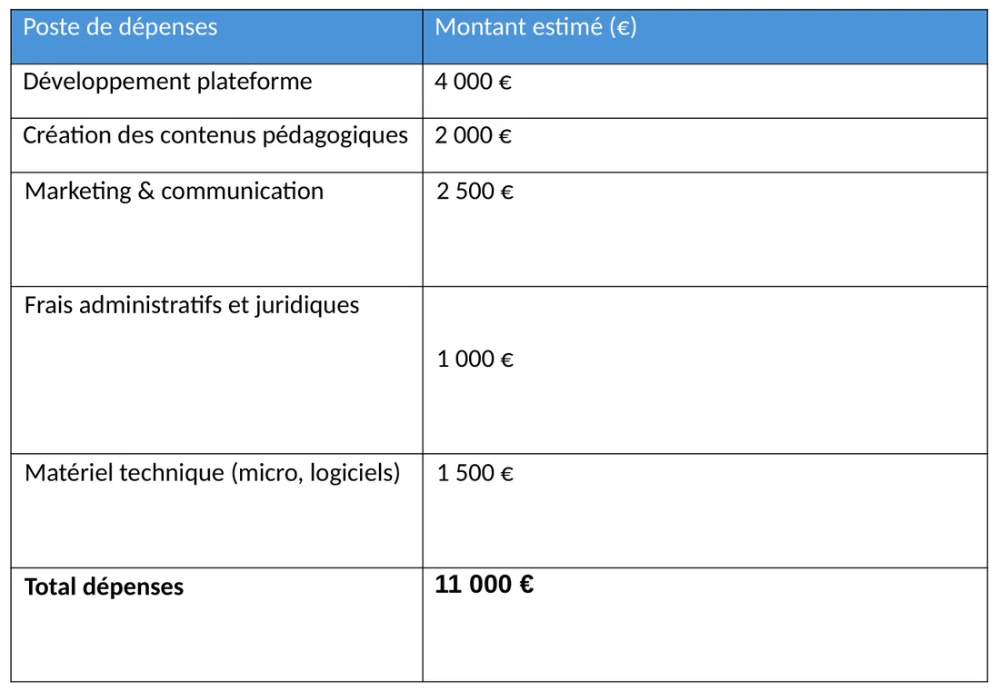

Gestion de projet · BC1 · BUT 2
Niveau 2 : Collaborer à la gestion de projet
Niveau attendu en deuxième année : intermédiaire. 7 apprentissages critiques, chacun avec ce qu’il recouvre, la situation où je l’ai travaillé et mes traces.
Apprentissages critiques du niveau 2
- AC21.01
Intégrer les champs de connaissances transversaux au projet
Ne plus seulement tenir compte des autres disciplines mais les intégrer aux livrables : le projet intègre réellement ses dimensions juridiques, financières ou commerciales.
Pour Les Entrep’, édition 2024-2025, nous avons imaginé à quatre NORMAL CTM Corporation, une plateforme de formations courtes en ligne et de coaching pour gagner en confiance en soi ; j’en dirigeais la communication et le marketing. Le dossier final, rendu le 23 mars 2025, fait tenir ensemble l’enquête de terrain et le persona, une matrice business model canvas durable et responsable, avec des contenus sous-titrés et adaptés aux personnes en situation de handicap, le mix marketing, un plan de financement, la trésorerie prévisionnelle sur trois ans et la partie juridique : marque à déposer à l’INPI, droits d’auteur sur les contenus, accords de confidentialité. Le droit a fait évoluer le projet : le business plan de janvier prévoyait une micro-entreprise, le dossier final retient une société par actions simplifiée à quatre associés à parts égales.
Avec le recul, le capital social y est fixé à 11 000 €, soit tout le besoin de financement, alors que les associés n’apportent que 3 000 € ; la subvention, les partenariats et le micro-crédit financent le projet sans entrer au capital.
TracesDossier final Les Entrep’, mars 2025 (groupe)PDFBusiness plan de janvier 2025 (groupe)

Matrice business model canvas durable et responsable de NORMAL CTM Corporation : offre, segments, canaux, coûts et revenus. - AC21.02
Évaluer les risques de tout ou partie d’un projet
Repérer ce qui peut faire dérailler le projet (retard, dépassement de budget, partenaire défaillant), estimer la probabilité et la gravité de chaque risque, puis prévoir une parade.
Dans le SWOT de NORMAL CTM Corporation, nous avons recensé ce qui pouvait faire échouer la plateforme : des concurrents installés comme Udemy, OpenClassrooms ou Coursera, des formations gratuites sur YouTube, des pannes ou des cyberattaques, et surtout notre dépendance aux réseaux sociaux, où un changement d’algorithme ou une hausse du coût de la publicité suffirait à couper notre visibilité. En stage, les risques étaient concrets. Un lot de bracelets pour nouveau-nés dégageait une odeur suspecte : j’ai identifié le lot grâce à l’étiquette de traçabilité et contacté le fournisseur, et les lots ont été remplacés. Pour la crèche, la médecin en santé environnementale m’a alerté sur les perturbateurs endocriniens présents dans de nombreux jouets ; j’ai proposé d’en commander moins, mais certifiés. Un bavoir n’a été retenu qu’après un test de huit lavages à la blanchisserie.
Avec le recul, notre SWOT liste les menaces sans les noter ni leur associer de parade ; une grille croisant probabilité et gravité aurait permis de les hiérarchiser.
TracesSWOT du business plan, janvier 2025 (groupe)Rapport de stage, missions 2 et 3 (non publié)
- AC21.03
Chiffrer tout ou partie d’un projet
Estimer le coût d’une action ou du projet entier à partir de devis, de tarifs et du temps passé, puis construire un budget prévisionnel cohérent.
Pour NORMAL CTM Corporation, nous avons chiffré un besoin de départ de 11 000 € : 4 000 € pour la plateforme, 2 000 € pour les contenus, 2 500 € pour le marketing et la communication, 1 000 € de frais administratifs et juridiques, 1 500 € de matériel. Il serait couvert par 3 000 € d’apports des associés, une subvention étudiante de 3 000 €, 2 000 € de partenariats et un micro-crédit de 3 000 €. Les prévisions donnent un chiffre d’affaires de 15 000 € la première année puis de 30 000 €, pour un résultat de 4 000 € puis de 14 500 €, avec une trésorerie suivie mois par mois sur trois ans. Au National GACO Game, nous avons construit le prix de chaque séjour à partir de ses coûts : 650 à 900 € par participant pour un stage sportif intensif, en additionnant infrastructures, hébergement, restauration, encadrement et récupération. Au DCF, le budget de Ray-Ban Meta a été revu poste par poste, de 3,7 à 6,4 millions d’euros selon l’offre, après que la synthèse du jury a relevé des budgets sous-évalués.
Avec le recul, deux prix coexistent dans le dossier Les Entrep’ : 500 utilisateurs y rapportent 7 500 € dans la prévision de ventes et 15 000 € dans la trésorerie. Et les salaires saisis dans l’outil FISY, par exemple 40 000 € par an et par coach, n’apparaissent pas dans les 5 000 € de coûts fixes retenus pour le résultat. Je recouperais aujourd’hui chaque chiffre d’une partie à l’autre.
TracesDossier final Les Entrep’, plan de financement (groupe)PDFDossier National GACO Game, offres (groupe)PDFDossier DCF, budget (binôme)

Plan de financement initial de NORMAL CTM Corporation : 11 000 € de dépenses de lancement. - AC21.04
Animer une équipe
Répartir les tâches, organiser les réunions, entretenir la motivation et gérer les désaccords pour que le groupe avance ensemble vers le livrable.
Cette année, je n’ai pas été chef de projet comme en première année. J’ai travaillé en binôme pour le DCF, en trinôme chez Intersport, à quatre pour Les Entrep’ et pour la négociation, en équipe pour le National GACO Game et le challenge Educatia. Dans Les Entrep’, chacun avait son domaine : deux associés sur la plateforme et la technique, dont l’un assurait aussi la coordination d’ensemble, un sur les contenus pédagogiques, moi sur la communication et le marketing, et les décisions se prenaient ensemble. Au challenge Educatia, consacré au Web3 et à la génération Z, mon auto-évaluation relève une répartition des tâches selon les compétences de chacun, une communication fluide et des délais tenus, mais une finalisation à mieux anticiper.
Avec le recul, c’est l’apprentissage que j’ai le moins exercé cette année ; la troisième année, où il s’agit de piloter un projet, sera l’occasion de reprendre un rôle de coordination.
TracesGrille d’auto-évaluation du challenge Educatia (individuel)Dossier final Les Entrep’, répartition des rôles (groupe)PDF
- AC21.05
Rendre compte aux acteurs du projet
Présenter régulièrement l’avancement, les résultats et les difficultés au commanditaire ou au tuteur, à l’écrit comme à l’oral, sous une forme adaptée à chacun.
En stage, j’ai présenté mon analyse des consommations de gants à la directrice adjointe de la DRELT. L’analyse a ensuite été présentée aux instances de l’hôpital, et la directrice adjointe m’a demandé la même étude pour les gants en vinyle et les produits d’incontinence. Après chaque rendez-vous, avec la directrice de la crèche puis avec la médecin en santé environnementale, j’ai rédigé un compte rendu ; au bloc opératoire, j’ai remis les échantillons avec une fiche de test pour que l’équipe les évalue. Côté IUT, trois comptes rendus de stage, les 2, 16 et 30 mai 2025, ont suivi l’avancement de mes missions avant le rapport et la soutenance. Au DCF, notre binôme a présenté sa stratégie devant le jury de sélection locale.
TracesComptes rendus de stage n° 1 à 3 (non publiés)Support de soutenance de stage (non publié)Synthèse du jury DCF
- AC21.06
Participer à l’élaboration de la communication du projet
Contribuer aux supports qui font connaître le projet en interne comme en externe : présentation, affiche, publication sur les réseaux sociaux, note d’information.
Dans Les Entrep’, j’étais chargé de la communication et du marketing de NORMAL CTM Corporation : une communication centrée sur l’impact humain, faite de storytelling, de témoignages d’utilisateurs, de lives et d’influenceurs du développement personnel, sur Instagram, TikTok et LinkedIn, appuyée par de la publicité ciblée sur Google Ads et Meta Ads. Au National GACO Game, notre équipe a construit la communication de CAP Alpes Provence, dont le compte Instagram venait d’être créé et la page Facebook était inactive depuis cinq ans : un concept, « Les Carnets d’Altitude », une mini-série vidéo « Une semaine à CAP Alpes », des défis photo, la refonte d’un site réduit à une page noire, et deux plans de communication mois par mois, de 200 000 € pour les familles et de 300 000 € pour les clubs sportifs. Au DCF, nous avons découpé le lancement en trois phases : teasing, lancement, puis fidélisation.
Avec le recul, nos plans fixent des budgets et des canaux, mais leurs objectifs restent qualitatifs, « maximiser la visibilité » par exemple, sans valeur cible ; c’est aussi ce que la synthèse du jury DCF reprochait à plusieurs plans.
TracesDossier National GACO Game, plans de communication (groupe)PDFDossier final Les Entrep’, stratégie (groupe)PDFDossier DCF, calendrier en trois phases (binôme)

Plan de communication pour les familles en cousinade, mois par mois : objectif, action, contenu, canal et budget. - AC21.07
Expliquer les écarts entre les objectifs fixés et les résultats
Mesurer l’écart entre le prévu et le réalisé, en chercher les causes et en tirer des leçons pour la suite au lieu de simplement le constater.
Ma première mission de stage partait d’un écart. Depuis que les gants ne sont plus achetés par une centrale d’achat mais dans le cadre d’un marché propre à l’établissement, leur prix unitaire a fortement augmenté. J’ai comparé le premier trimestre 2024 au premier trimestre 2025, service par service, à partir des quantités extraites de Business Objects et des prix de MEVA, avec des tableaux croisés dynamiques. Résultat : la consommation de gants en nitrile a baissé de 17 %, mais la dépense a augmenté de 131 %, car la baisse des quantités ne compense pas la hausse du prix. L’analyse montre aussi que 20 services consomment plus de 60 % des gants, ce qui désigne où agir d’abord : blocs opératoires, urgences, réanimation. J’ai pris contact avec les cadres de ces services et avec la responsable des équipes hôtelières.
Avec le recul, mon rapport annonce une hausse du prix unitaire de 64 % : j’avais rapporté l’écart au nouveau prix au lieu de l’ancien. Rapportée au prix de départ, la hausse approche 180 %. La leçon : toujours préciser sur quelle base un pourcentage est calculé.
TracesAnalyse des consommations de gants, Excel (document interne, non publié)Rapport de stage, mission 1 (non publié)

Bilan du niveau 2
Points forts : faire tenir dans un même dossier le marketing, la finance et le droit d’un projet de création, contribuer aux plans de communication de trois projets, et rendre compte en stage d’une analyse ensuite présentée aux instances de l’hôpital.
À renforcer : la cohérence des chiffres d’une partie à l’autre d’un dossier, et l’animation d’équipe, peu exercée cette année.
Pour la suite : au niveau 3, piloter un projet : tenir un seul tableau de chiffres de référence pour toute l’équipe et reprendre un rôle de coordination.